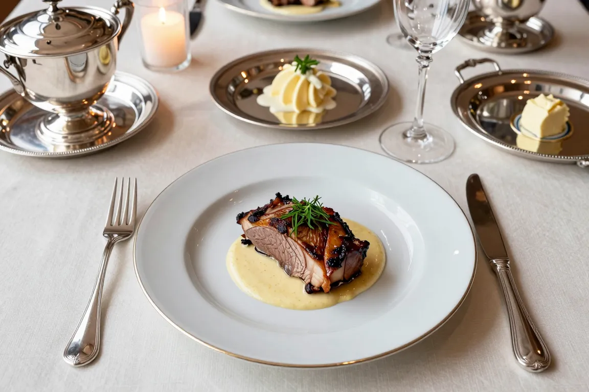

кухня · 1651–1800 · также: Кухня Ла Варена, Французская классическая кухня XVII века
Французская кухня после Ла Варена. «Французский повар» 1651 года закрепляет ру, бульон, букет гарни и тонкие травы. Специи сводятся к перцу и мускату, сливочное масло заменяет сало. Первым идёт вкус самого продукта.

Главная идея
Готовьте ради вкуса самой еды: стройте каждый соус на бульоне и ру и берите травы там, где средневековая кухня брала специи.
Принципы дизайна
Сначала варите бульон и стройте на нём каждый соус и каждый суп.
Загущайте соус ру из муки и масла, а не хлебным мякишем.
Берите тонкие травы, букет гарни и грибы вместо тяжёлого груза специй.
Сводите специи к перцу, мускату и гвоздике и берите сливочное масло вместо сала.
Готовьте каждое блюдо с его собственным соусом и давайте супу и антре своё место.
Подавайте по-французски: три перемены блюд, выложенных по рисунку на столе.
Готовьте свежие овощи и рыбу и записывайте каждый рецепт короткими шагами.
Антипаттерны
Соус, загущённый размоченным хлебом и молотым миндалём